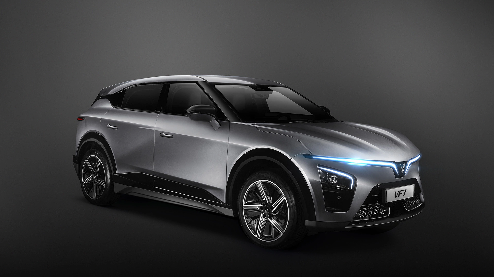

◉ VF7 SOUND LAB

PREMIUM SOUND COCKPIT
IDLE800
VIRTUAL RPM
SMART SOUND ENGINE
TỐC ĐỘ0km/h
SỐ ẢO1simulated
GA ƯỚC TÍNH0%GPS estimated
CHỌN ÂM THANH6 PROFILES
60%
ACTIVE PROFILE · Porsche EV
● CHƯA BẬTNOT-CREATED
Chưa bật âm thanh.
0%
TÍN HIỆU GPSĐang chờ GPS
SPEED--km/h
ACCEL--m/s²
ACCURACY--m
FIX AGE--seconds
GPS iPhone · Ghép nối dự phòng
Chưa kết nối
--------
Nếu APTV không cấp GPS: mở trang GPS iPhone, nhập mã trên màn hình xe. Ưu tiên GPS APTV khi có tín hiệu.
⚙ Chẩn đoán âm thanh / GPS / APTV
Âm thanh: chưa bật · GPS: chưa có dữ liệu
Ứng dụng dùng GPS do trình duyệt đang mở trang cấp. Trên APTV, cần HTTPS và quyền vị trí. iPhone không tự chuyển dữ liệu GPS qua CarPlay nếu thiếu cầu nối riêng. GPS đo tốc độ trễ; thuật toán chỉ ước tính ga, giảm tốc và cấp số, không đo bàn đạp hoặc hệ thống phanh xe.
Thử nghiệm khi xe đỗ: mở web bằng APTV, cấp quyền định vị, chọn profile, nhấn BẬT PÔ và kiểm tra âm thanh. Chỉ sử dụng các nút kiểm tra và cấu hình khi xe đang đỗ. Tránh điều chỉnh màn hình khi đang lái. Dữ liệu GPS không được gửi lên máy chủ.